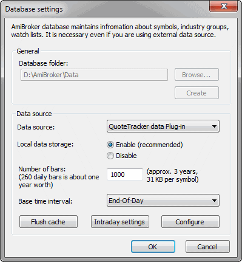
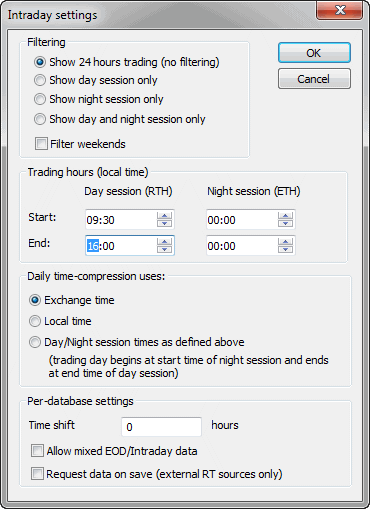
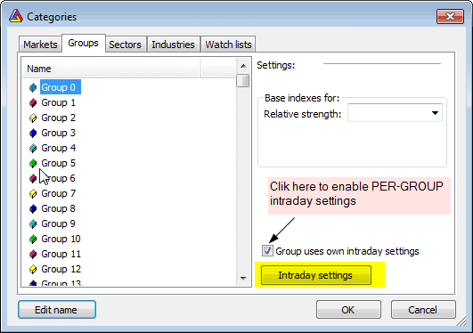

Database Settings
This window allows you to define per-database settings. It is accessible via
File->Database Settings menu.

IMPORTANT: These per-database settings in this window take precedence
over default
values definable in Preferences window. See
explanation in Tutorial:
Understanding database concepts.
The database settings window is divided into two parts: General and Data source
General settings part is enabled only at the database creation
time (File->New
database), once the database is created, these controls become disabled.
- Browse... - allows to browse for a folder where a new database
should be created.
- Create - clicking on this button creates the database inside the
folder specified in Database folder edit field.
For more details about creating new databases and working with particular data
sources, please check the Tutorial section.
Data source part becomes enabled once the database is created and it can
be used to modify settings for already existing databases (via File->Database
Settings menu). The following controls are available:
- Data source: defines the data source; this can be either
- (local) - it means that no external source is used and data is maintained
by AmiBroker itself. Such a database can be updated either using AmiQuote
(Tools->Auto-update quotes) or using ASCII import - Import
Wizard, Metastock
importer, or a script.
- external data source (one of: eSignal, myTrack, QuoteTracker, Quotes
Plus, TC2000/TCNet, FastTrack, Metastock) - it means that data is retrieved
directly from an external database / data source. Such a database is updated
automatically via a plugin and does not require any user action in AmiBroker.
For example, if you use TC2000 as a data source, all data that is present
in the TC2000 system becomes automatically available in AmiBroker. For more
details, please read Tutorial: Understanding
database concepts.
- Local data storage: decides whether data from an external data source should
also be stored/cached in AmiBroker's own files. If "Enabled", then
external data is cached in local files. If "Disabled", then
local files do not store external data. Switching this to "Enabled" is required for
most real-time data sources, such as eSignal, myTrack, QuoteTracker. This
setting has no effect if the data source is set to (local).
- Number of bars to load - defines how
many bars should be loaded from an external data source and kept in AmiBroker.
Examples: 10-year EOD: 2600, 60-day intraday 1-minute: 30,000 (approx.). This
setting has no effect if the data source is set to (local).
- Base time interval - defines what 'base' bar interval is used in
this database. For real-time data sources, this should be set once at the
database creation time. This is so because real-time sources need to collect
RT ticks and pack them (time-compress) into interval bars. This setting defines
the minimum 'grain'. For EOD sources, it is End-of-day (daily). For real-time
sources, this should be 1-minute or higher. For some real-time sources (like
eSignal), this can also be set to tick, 5-second or 15-second.
Please note that you also won't be able to use intraday charting and/or
analysis until the base time interval is set to something below the end-of-day
interval (it can be 1-minute, for example).
For more details, please read Tutorial: Basic charting
guide.
- Flush cache - allows to force cache flushing and to retrieve fresh data from the plugin
- Configure - allows to display a data source-specific configuration
dialog. See Tutorial section for details on configuring
various data sources.
- Intraday settings - allows to define per-database settings for intraday
databases (see below)
Intraday Settings window

- Filtering - this provides control over the display of intraday data.
AmiBroker collects all the data but displays only that data that is inside
selected
trading hours start and end times. Please note
that this affects all charts and windows except the Quote
Editor, which always displays all available data.
Show 24 hours trading (no filtering) - all data is displayed (no filtering
at all)
Show day session only - only the data between day session (RTH) start and
end times are displayed
Show night session only - only the data between night session (ETH) start
and end times are displayed
Show day and night session only - only the data between either day session
start/end times or night session start/end times are displayed
Filter weekends - When checked, AmiBroker collects but does not display
data from weekends. When unchecked, those data is collected and displayed.
- Trading hours Start/End - defines trading hours start and
end times for day (RTH) and night (ETH) sessions separately (see above).
Please note that the times should be specified in your local time zone.
- Daily time-compression uses - this decides how AmiBroker
performs intraday to daily time compression
Exchange time - daily data is constructed from intraday bars starting from
00:00 and ending at 23:59 in the EXCHANGE (or data source) TIME ZONE.
Local time - daily data is constructed from intraday bars starting from
00:00 and ending at 23:59 in the LOCAL (computer) TIME ZONE.
Day/Night session times as defined above - daily data is constructed from
the intraday bars that start at the start time of night session (previous day)
and end at the end time of day session.
- Time shift: is the time difference (in hours) between your local
time zone and the exchange time zone.
- Allow mixed EOD/Intraday data - it allows working with a
database that has a mixture of intraday and EOD data in one data file. If
this is turned on, then in intraday modes, EOD bars are removed on-the-fly,
and in daily mode, EOD bars are displayed instead of time-compressed intraday,
or if there is no EOD bar for the corresponding day, then intraday bars are compressed
as usual.
This mode works in conjunction with new versions of plugins that allow mixed
data. As of June 2008, Mixed mode is now supported by IQFeed plugin and eSignal
plugin (1.7.0 or higher). Mixed
mode allows for intraday plus very long daily histories
in one database.
Note that Intraday Settings available from Database
Settings dialog is PER-DATABASE. There is, however,
also an option to define PER-GROUP intraday settings. To use
PER-GROUP intraday settings, you have to open Symbol->Categories window,
switch to the Groups tab and
check "Group uses own intraday settings" box as shown in the picture below

Then you can click on the Intraday Settings button to display
per-group settings. Please note that each group in the category list can have
its own individual settings, so you can easily set up groups so that they contain
instruments traded in different hours. You can move symbols between groups
using Symbol->Organize assignments dialog.